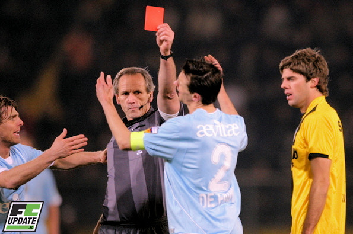

Weken moesten ze erop wachten in Breda en zaterdag was het dan eindelijk
zover: de eerste overwinning in het nieuwe jaar. Slachtoffer van deze
dadendrang was degradatiekandidaat Roda JC, dat in een pover duel behoudens
twee afstandschoten geen vuist kon maken.
De door blessures gehavende ploeg van trainer Robert Maaskant won door een
rake kopbal van uitblinker Nourdin Boukhari kort voor rust. In het tweede
bedrijf gooide Roda-verdediger Davy de Fauw het duel al vroeg op slot door
een domme rode kaart.
NAC, dat voor de winterstop de zeges nog aaneenreeg, gleed in het nog prille
jaar elke week verder het dal in. Trainer Maaskant kon de vele blessures nog
als verzachtende omstandigheid aanvoeren, maar de verliespartijen in
Enschede en Heerenveen waren dermate vernederend dat hij zich tegen Roda
geen misstap kon veroorloven. Het fanatieke doch kritische Bredase publiek
is namelijk allesbehalve verwend in 2009.
Hoewel de thuisploeg nog steeds met een waslijst aan afwezigen te maken had
voor de wedstrijd van zaterdagavond kwam het, in tegenstelling tot de
voorbije weken, wel met fris voetbal voor de dag. Daarbij was een hoofdrol
weggelegd voor Boukhari, die het ook als rechtsbuiten blijkt te kunnen. Ook
Roda-kapitein De Fauw deed een duit in het amusementszakje. Hij moest na
krap 55 minuten al naar de kant met een directe rode kaart vanwege een grove
charge op Martijn Reuser.

De doldrieste actie van de Belg bleek de nekslag voor de Limburgers. In de
eerste helft boden zij nog goed tegenstand aan NAC, met een aantal kansen
tot gevolg. Anouar Hadouir en Marcel Meeuwis waren het dichtst bij een
doelpunt voor de bezoekers. Prachtige afstandschoten van het duo misten het
nodige geluk, dat Roda sowieso ontbeert dit seizoen. Hadouir schoot vanuit
de draai loepzuiver, maar op de lat. Meeuwis jaagde het leerwerk vanaf
twintig meter slechts luttele centimeters naast.
De beste kansen waren echter voor de Brabanders. Zo had Fouad Idabdelhay al
in de beginfase de 1-0 op de schoen. De centrumspits werd diepgestuurd door
Csaba Fehér en lepelde oog in oog met doelman Bram Castro schlemielig over.
De tweede grote kans voor NAC kwam op naam van de Volendammer Kees Kwakman.
De middenvelder kreeg de bal op een presenteerblaadje van Boukhari. De vrije
kopkans was echter niet aan Kwakman besteed. Hij mikte op de paal. De derde
NAC-kans voor rust leverde wel succes op. De frivool spelende Boukhari liep
perfect met zijn hoofd tegen een strakke corner van Fehér aan.
Omdat Roda de laatste 35 minuten met een man minder verder moest kwam NAC's
voorsprong nauwelijks meer in gevaar. De thuisploeg had weliswaar moeite het
spel te maken na de verbanning van De Fauw, maar Roda leek dan ook niet te
geloven in de gelijkmaker. Verder dan wat afstandschoten kwam de
degradatiekandidaat niet. Zodoende mocht NAC het eerste competitiefeestje
van 2009 vieren, zo vlak voor het traditionele carnaval.
Bron: voetbalelf.nl